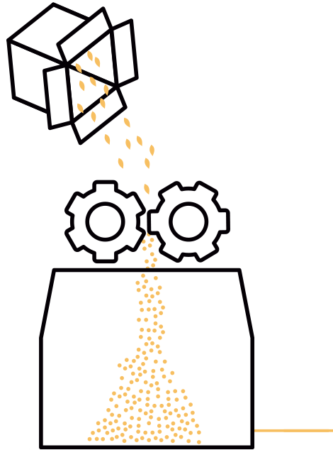
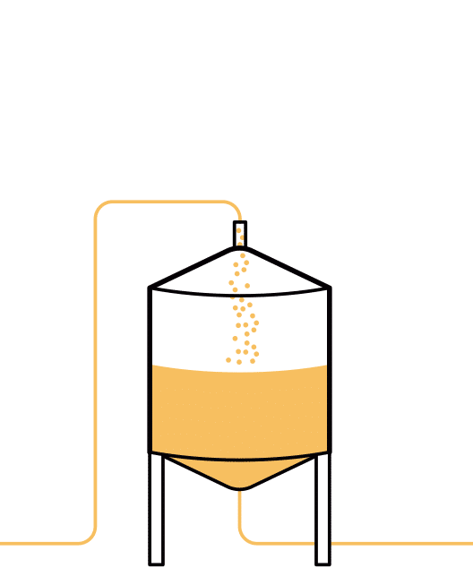
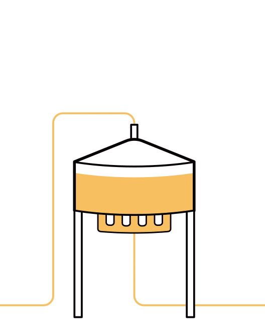
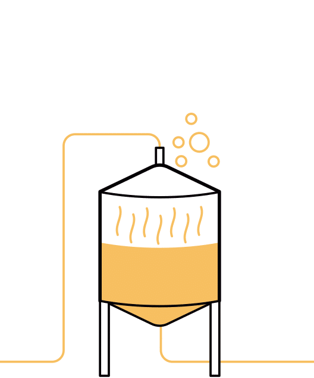
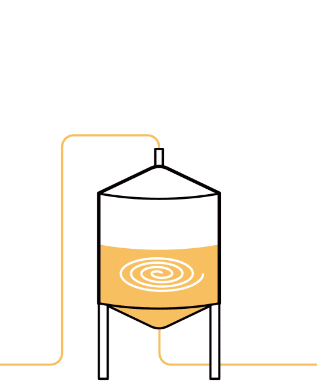
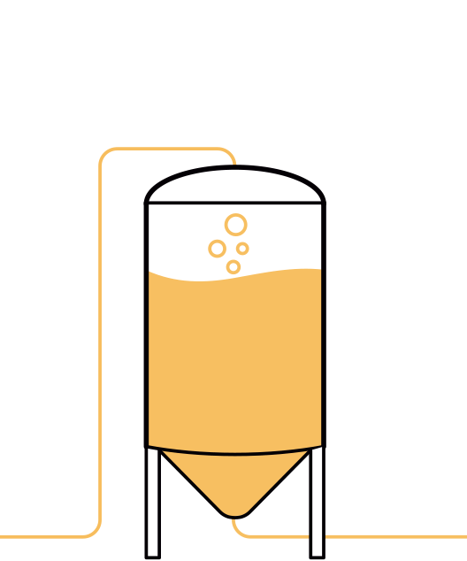
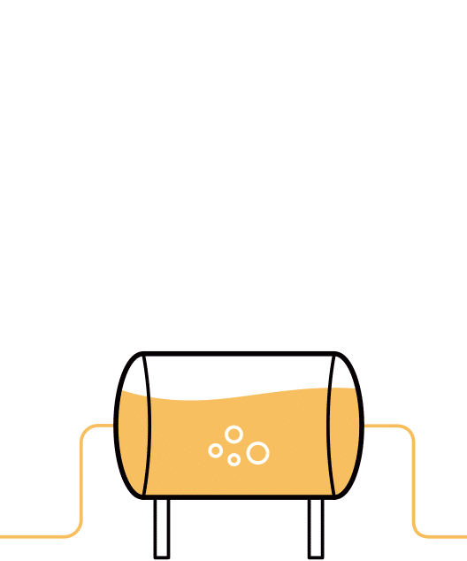
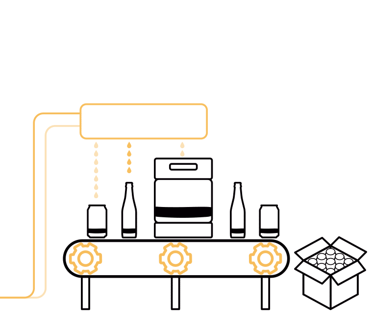

MOLIENDA
El primer paso para elaborar cerveza es la molienda de la malta. El grano se aplasta para que pueda disolverse en el agua con más facilidad, cuidando que la cáscara quede lo más intacta posible para favorecer el posterior filtrado. El almacén de maltas y la zona de molienda se encuentra en la primera planta de la fábrica, justo encima de nuestro equipo de elaboración.
MACERADO
El grano cae por gravedad, recién molido, en el macerador donde le espera agua caliente. Durante la maceración se van activando diversas enzimas naturales procedentes de la malta que van a transformar el contenido de almidón del grano en diferentes tipos de azúcares. Las variaciones en los tiempos y temperaturas utilizados dependerá del tipo de cereal y del estilo de cerveza.
EXTRACCIÓN DEL MOSTO
Una vez finalizada la maceración, la mezcla se trasvasa a la cuba fitro. Este depósito cuenta con un falso suelo, que hace las veces de gran colador que va, poco a poco, separando el mosto de los restos de grano, mientras se añade agua caliente por la parte superior del depósito para facilitar el proceso y extraer la cantidad de mosto requerido por la receta en cuestión.
COCCIÓN
El mosto extraído durante el filtrado se devuelve al macerador, que ahora hará las veces de hervidor, para proceder a la cocción. En este proceso, además de esterilizarse el mosto, se añade el lúpulo, tercer ingrediente fundamental en la elaboración de cerveza, que aportará no sólo amargor, sabor y aroma a la cerveza sino también propiedades antibacterianas y conservantes.
WHIRLPOOL
Tras la cocción, se realiza un centrifugado, donde un movimiento circular acumula las impurezas en la parte central del tanque y permite extraer el mosto limpio.
ENFRIADO
Antes de trasvasarlo a los fermentadores, es básico enfriarlo rápidamente desde la temperatura de cocción hasta la temperatura de trabajo de las levaduras, entorno a los 18-20ºC para las tipo ale y a los 8-10ºC para las tipo lager.
FERMENTACIÓN
Durante el trasvase del mosto a los fermentadores, se añade la levadura que comenzará a multiplicarse mientras se alimenta de los azúcares del mosto y los transforma en CO2 y alcohol. Al final de este proceso el mosto se habrá convertido en cerveza. Nuestros equipos son isobáricos, lo que nos permite mantener el CO2 generado durante esta primera fermentación y carbonatar naturalmente la cerveza.
MADURACIÓN
Cuando la levadura ha consumido todo el azúcar, la temperatura de la cerveza se reduce hasta los 0ºC para comenzar el proceso de maduración, en el que la cerveza se estabiliza y se limpia y clarifica. A esa temperatura, la levadura se aletarga y cae hacia el cono del fermentador por donde se extrae. Son el frío y el tiempo quienes filtran naturalmente la cerveza por decantación.
FILTRADO TANGENCIAL
Antes del envasado, acondicionamos algunos de nuestros estilos mediante el novedoso sistema de filtración tangencial que consiste en hacer circular la cerveza sin filtrar a lo largo de una serie de filamentos huecos de fibra de una porosidad determinada, a través de los cuales va manando la cerveza filtrada, lateralmente al flujo y de forma continua. Se trata de un proceso totalmente mecánico que no requiere medios filtrantes desechables, ni químicos, ni genera residuos.
ENVASADO
La cerveza terminada está lista para el embotellado, el embarrilado y ahora, por primera vez en España, para el enlatado. En ambos procesos utilizamos sistemas de llenado isobáricos. Esto significa que tanto en botella o lata como en barril la cerveza se introduce manteniendo el CO2 disuelto e integrado proveniente de la primera fermentación, lo que le otorga una mayor naturalidad, mayor estabilidad y menor turbidez.